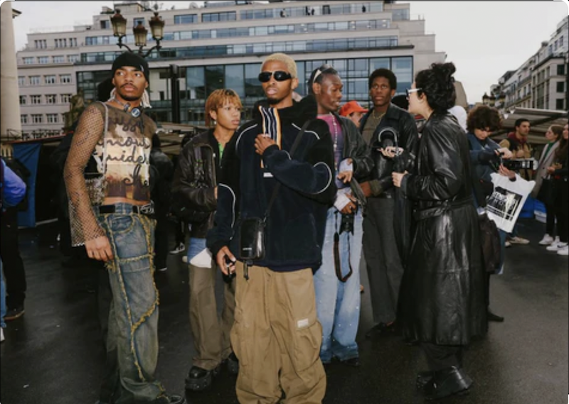

Streetwear: The Psychology of Hype and Tribalism
Streetwear has evolved from underground skate, surf, and hip-hop subcultures into a dominant force in global fashion. But the true psychological appeal of streetwear goes far beyond the comfort of oversized hoodies and graphic tees; it is deeply rooted in concepts of authenticity, modern tribalism, and anti-establishment rebellion.
Originally, streetwear was a rejection of traditional, exclusionary luxury fashion. It was created by and for the youth, making "authenticity" its highest currency. Today, even as luxury brands co-opt the aesthetic, that psychological desire for authentic, "in-the-know" culture remains. Streetwear operates as a form of modern tribalism. A specific sneaker or a distinct graphic logo acts like a modern coat of arms. It signals to others that you share their cultural interests, giving the wearer a profound sense of belonging to a specific, exclusive community.
Furthermore, the "hype" model—driven by limited-edition drops—expertly taps into the psychology of scarcity. Human brains are wired to assign higher value to things that are rare. The gamification of shopping makes securing a highly coveted streetwear piece feel like a massive psychological reward, providing a significant boost to the wearer's social status and self-esteem in a crowded digital world.
Text generated by Google Gemini
Source: Lindy News